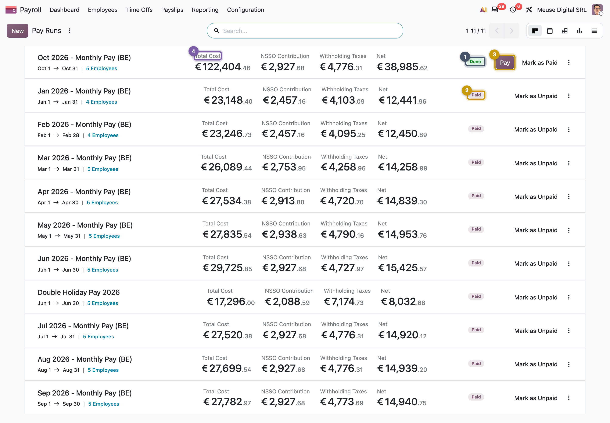
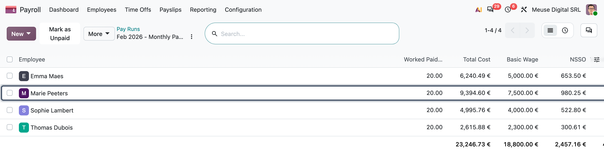
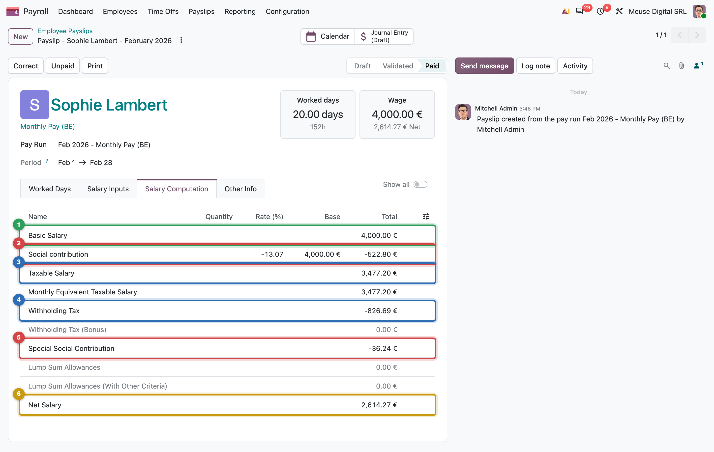
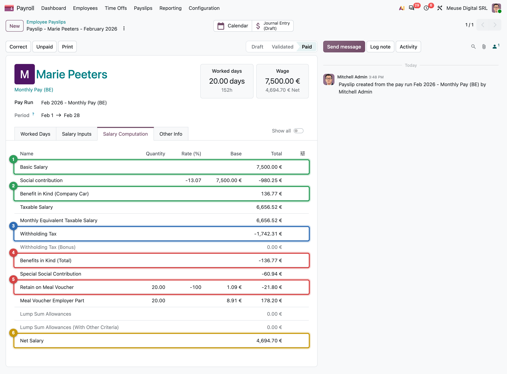
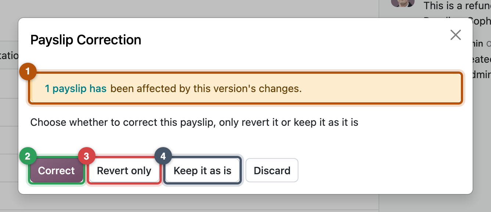
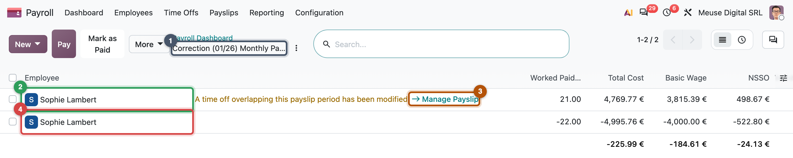

Pay runs and payslips
Generate, compute, review, validate, and correct without breaking the audit trail
- Follow a pay run through its states and say what each button does
- Read a payslip tab by tab: worked days, inputs, computation, other info
- Use warnings to decide whether a run can be validated
- Pick the right tool for a mistake: recompute, cancel, correct, or an off-cycle payslip
- Run January to May 2026 for MyVidangeCompany, including a late correction and overtime
End of January 2026: four employees, no payslip yet, and the bank wants a file by the 28th. This chapter is the monthly routine: open a pay run, let Odoo build the payslips, review, validate, and correct a payslip after it was validated.
The pay run
A pay run (hr.payslip.run) is one batch of payslips: everyone paid on the same structure for the same period, for example Monthly Pay, February 2026. You work on the run instead of on fifty payslips one by one.
You never set a run's status yourself. It follows its payslips, and tells you at a glance where the month stands:
(If every payslip is cancelled, the run is Cancelled.)

When you create a run, Odoo finds the valid versions (running in the period, on the structure's pay category, not already paid in another regular run) and creates one draft payslip per version, with its worked days (Chapter 14). The salary lines come with Compute.

Reading a payslip
A payslip has four tabs, in the order of the calculation: Worked Days (Chapter 14), Salary Inputs (values typed for this payslip, or brought by adjustments), Salary Computation (the lines the rules computed, hr.payslip.line) and Other Info (accounting date, journal).

Worked example: Mélanie, February 2026
| Line | Code | Amount (€) |
|---|---|---|
| Basic salary | BASIC |
4,000.00 |
| Employee social security 13.07 % | ONSS |
−522.80 |
| Taxable salary | GROSS |
3,477.20 |
| Withholding tax | P.P |
−826.69 |
| Special social security contribution | M.ONSS |
−36.24 |
| Net salary | NET |
2,614.27 |
| Employer social security (hidden line) | ONSSEMPLOYER |
1,032.00 |
Hidden lines (Show all) are intermediate steps and employer lines, which only accounting reads. Chapter 2 explains the bases, Chapter 19 the rules.
Marie's payslip adds what her version holds: the car and the meal vouchers.

Compute deletes the draft lines and runs the structure's rules in sequence (Chapter 19). Drafts also refresh by themselves when a wage changes or a leave is approved.
Warnings before you validate
Each payslip shows its problems as a banner and a badge: red (blocked) or orange (read it first). Validation also refuses if a dashboard warning marked block payslips concerns these payslips.
Common pitfall: a banner that is not an error
Emma's termination payslip shows "Payslip period does not match payrun": it covers 31 October only. That is expected for exit payslips (Chapter 17). Read each warning; do not try to make every banner disappear.
Validation, and what it starts
Validate is the point of no return of a payroll month. Before it, payslips are drafts that change with the data. After it, they are the official record of what each employee was paid: the amounts are frozen, and three things start.
A validated payslip is never recomputed. If its data changes later, Odoo flags it as outdated and offers a correction.
Corrections
A payslip needs a correction when what it says is no longer true. That happens more often than mistakes in the rules:
- information came late: a sick day or an unpaid day approved after the month was validated;
- a change was backdated: a raise agreed in March, effective from 1 January;
- the data was wrong: a wrong wage, a forgotten input, the wrong pay category;
- the law changed retroactively: a new rate published in July, valid from January (Chapter 11).
A validated payslip has already been sent to the employee, booked in the accounts and counted in the declarations, so payroll never edits it. It cancels it with a negative copy and issues the right one; only the difference between the two is still to pay or to recover.
Three other tools exist for other situations: delete a draft payslip that should not exist; cancel a validated one that should never have existed (payroll managers only; its entry is reversed); and use an off-cycle payslip on another structure for a payment outside the regular month, such as a 13th month, holiday pay, an advance or a leaver's exit pay.

Worked example: Mélanie's late unpaid day (Mission 15.2)
Mélanie's unpaid day of 23 January is approved after January was validated. Her payslip shows an issue with a Manage Payslip link, and Correct creates a run Correction (01/26) Monthly Pay (BE):
| Payslip | Net (€) |
|---|---|
| Refund: Mélanie, January (the original, negated) | −2,614.27 |
| Correction: Mélanie, January (with the unpaid day) | 2,537.30 |
| Difference | −76.97 |
The unpaid day removes one day at the fixed hourly rate (Chapter 14): basic 3,815.39 €.

Common pitfall: validating a Belgian correction run
The Belgian localization marks a payslip with a negative net as Paid at once, so Validate on the correction run fails with "You can't create a journal entry for a paid payslip". Validate the correction payslip itself.
Around the world
- Belgium: ten structures (monthly pay, double holiday pay, 13th month, termination fees, exit holiday pay…).
- Luxembourg: a gratification and a 13th month.
- Mexico: a Christmas bonus.
- Saudi Arabia: a salary advance and loan structure.
- Most others: one regular structure.
In practice: three checks before Validate
- Headcount: one payslip per person you expect (Yannick from March, Emma's exit payslips in October).
- Delta: compare net and total cost with last month; explain every difference by an event.
- Issues: open every orange or red badge and read it.
Missions
Mission 15.1 · Run January ★
Situation. End of January 2026: MyVidangeCompany's first pay run in Odoo.
Your goal. Create, compute and validate the January pay run on Monthly Pay (BE).
Check. 4 payslips, net 12,441.96 €, total cost 23,082.89 €, state Done.
Hint
Odoo proposes the current month: set 1–31 January 2026.
Mission 15.2 · A late unpaid day ★★★
Situation. On 5 February, HR remembers that Mélanie took Friday 23 January off, unpaid, for a family matter. January is already validated.
Your goal. Record the leave and correct Mélanie's January pay, keeping the original payslip.
Check. A run Correction (01/26) Monthly Pay (BE) holds a refund of −2,614.27 € and a correction of 2,537.30 € net, both validated; the January run stays Done at 12,441.96 €.
Hint
After approval, Mélanie's January payslip offers a way to the correction wizard. Read the pitfall above before you validate.
Mission 15.3 · February to April, with Yannick ★★
Situation. Three ordinary months, except that Yannick joins on 12 March and Jurgen is absent twice in April (Mission 14.2).
Your goal. Run, compute and validate February, March and April.
Check. February net 12,450.89 € (4 payslips); March 14,258.99 € (5 payslips, Yannick 1,818.11 €); April 14,839.30 € (Jurgen 2,040.54 €).
Hint
If Yannick is missing from March, check his contract start (Mission 13.4), not the pay run.
Mission 15.4 · Overtime in May ★★
Situation. On Wednesday 20 May Jurgen stays from 16:30 to 20:30 to clear a ticket backlog: 4 hours of voluntary overtime at 150 %, in his first month at 2,500.00 € (Mission 13.4).
Your goal. Record the overtime and run May.
Check. Jurgen's May payslip: basic 2,500.00 €, VOLOT150 4 hours, 91.09 €, net 2,196.55 €; the May run's net is 14,995.96 €.
Hint
Overtime is a request of type Voluntary Overtime (150%) with a start and end time (Chapter 14). Why is it more than the 83.81 € of Chapter 14's screenshot?
Summary
- A pay run is a period, a structure and a list of versions; its state follows its payslips (Draft, Ready, Done, Paid).
- Generating creates one draft payslip per valid version, with worked days; Compute adds the lines; Validate locks them and creates the journal entry.
- Issues and blocking warnings decide whether a payslip can be validated; banners are information, not always errors.
- A validated payslip is never edited: Correct creates a refund and a recomputed payslip in a correction run.
- Holiday pay, bonuses, advances and exit pay are off-cycle payslips on their own structures.